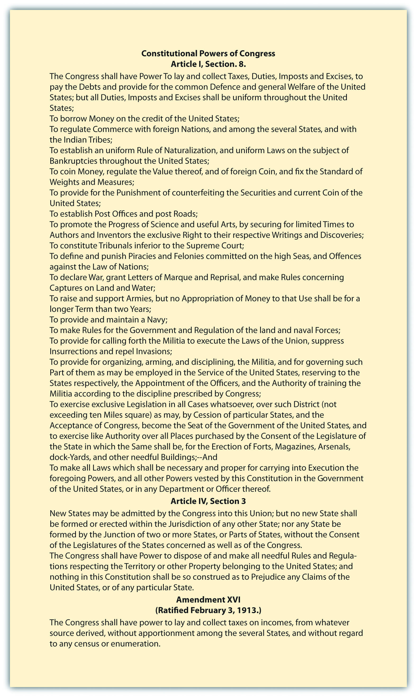

After reading this section, you should be able to answer the following questions:
The institution of Congress is responsible for carrying out the legislative duties of the federal government. The powers of Congress are enumerated in Article I of the ConstitutionThe article that enumerates the powers of Congress.. The founders established Congress in Article I, Section 1, which states, “All legislative Powers herein granted shall be vested in a Congress of the United States, which shall consist of a Senate and House of Representatives.” By instituting Congress in the first article of the Constitution the founders asserted their belief that the legislative branch should be the chief policymaking body. They preferred a government with power vested in the legislature, which they considered most representative of the people, rather than one where the executive was preeminent. They associated the executive branch with the British monarchy, which they had fought against in the Revolutionary War, so they relegated the presidency to the second article of the Constitution. As James Madison wrote in Federalist No. 51, “In a republican government, the legislative authority necessarily predominates.”Clinton Rossiter, ed., “Federalist 51,” in The Federalist, Alexander Hamilton, James Madison, and John Jay (New York: Mentor, 1961), 322.
Congress was granted tremendous political power by the founders. These powers are listed primarily in Article I, Section 8, of the Constitution, which states that Congress has broad discretion to “provide for the common defense and general welfare of the United States.” To achieve this end, Congress has the authority to make and implement laws.
The Constitution lists a number of specific powers entrusted to Congress. These include responsibility for the nation’s budget and commerce, such as the power to lay and collect taxes, to pay the debts, to regulate commerce with foreign nations and among the states, to coin money, and to establish post offices. Congress is assigned the power to declare war and to raise an army and navy. Congress has the right to propose amendments to the Constitution and to create new states.
Figure 12.1 Constitutional Powers of Congress
Certain powers are granted specifically to the House, such as the power to initiate all tax and spending bills. While the Senate cannot propose such bills, it can accept, reject, or amend them. The Senate has certain authority not vested in the House. High-level presidential nominees, such as cabinet officers, Supreme Court justices, and ambassadors, must gain Senate approval. The Senate also must concur in treaties with foreign countries.
The final paragraph of Article I, Section 8, grants to Congress the power “to make all laws which shall be necessary and proper for carrying into execution the foregoing powers.” This provision is known as the elastic clauseThe constitutional provision that Congress shall make all laws that are “necessary and proper” for executing their powers, which has been used to expand its authority; also known as the “necessary and proper” clause. because it is used to expand the powers of Congress, especially when national laws come into conflict with state laws. Legislation making it a federal crime to transport a kidnapped person across state lines was justified on the basis that the elastic clause allowed Congress to apply its power to regulate commerce in this situation. The reach of congressional power is explored on the website of the University of Missouri–Kansas City Law School.
Article I of the Constitution establishes Congress as the legislative branch of government with broad powers to provide for the “common defense and general welfare of the United States,” along with specific powers in important areas of domestic and foreign affairs. Certain powers, such as the ability to initiate taxing and spending bills, rest exclusively with the House of Representatives. Other powers, including the approval of presidential appointments, lie solely with the Senate. The powers of Congress have been extended through the elastic clause of the Constitution, which states that Congress can make all laws that are “necessary and proper” for carrying out its duties.